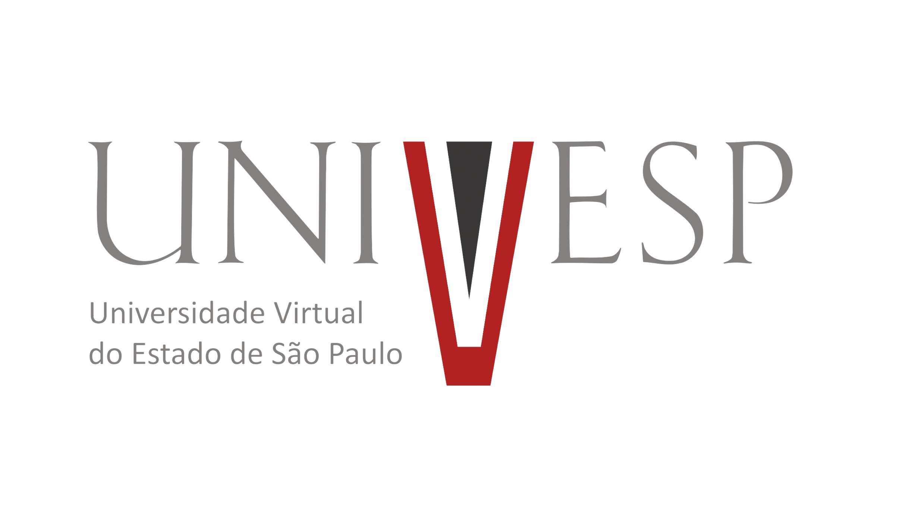

Bem-vindo
Este primeiro projeto foi desenvolvido primeiramente para a materia de Projeto integrador da faculdade, O principal objetivo é automatizar o estimulo do frango dentro de galpões, para realizar isso será necessário desenvolver dois sistemas. Um sistema mecânico e outro sistema remoto que sua função sera controlar remotamente por celular e computador a parte mecanica, o sistema mecânico será implantado nas linhas de ração nos aviários que terá como função agitar o prato de ração já o sistema remoto será responsável por controlar o tempo de balanço do prato e o tempo que terá que ocorrer tal automação, espero obter um resultado de qualidade e ganho de peso estável durante as semanas de engorda.

teste